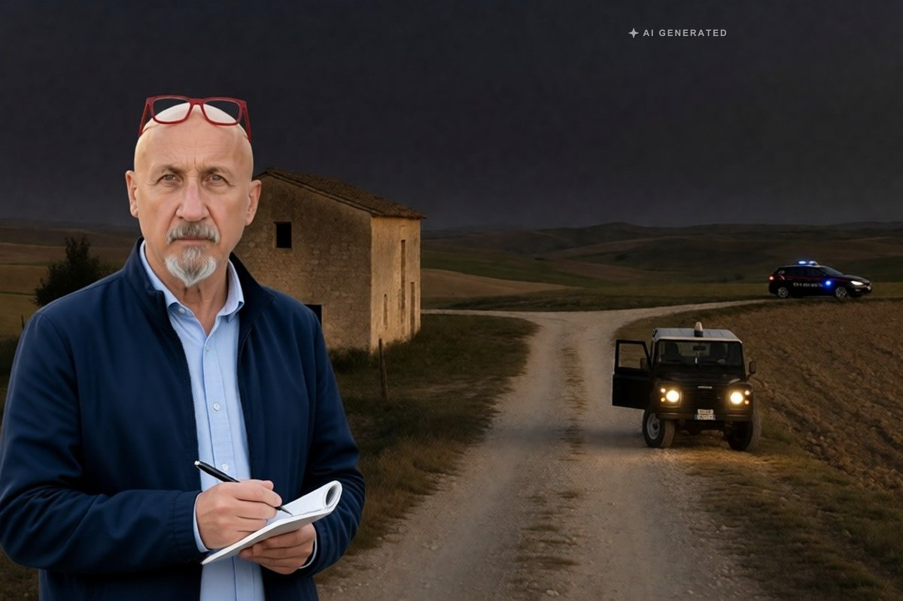

Cronaca · 2 novembre 2026
Imprenditore agricolo ucciso a fucilate nelle campagne di Gangi

Alessandro Barreca, 53 anni, è stato trovato morto accanto al suo fuoristrada in contrada Rolica, con due colpi di fucile al torace. I carabinieri lavorano su tre ipotesi e hanno sentito per ore familiari e amici. Nessun fermo.
di Franco Zanghì
Gangi, sulle Madonie, in provincia di Palermo. Nelle campagne di contrada Rolica, al confine con la provincia di Enna, un imprenditore agricolo di 53 anni, Alessandro Barreca, è stato ucciso con due colpi di fucile al torace.
Come è stato trovato
Sabato pomeriggio la moglie non riesce più a sentirlo. Lo chiama, gli scrive, e la sera dà l’allarme. I carabinieri lo trovano verso l’una e mezza di notte, vicino al suo casolare. Il fuoristrada ha il motore acceso, i fari accesi e lo sportello del guidatore aperto. Il corpo è fuori dall’auto.
Secondo quanto riportato, prima di uscire Barreca aveva detto ai familiari che andava a mettere al riparo i suoi asini, per il maltempo. L’ora esatta del delitto non è nota.
Le indagini
Indagano i carabinieri del gruppo di Monreale con le stazioni di Gangi e di Villadoro, coordinati dalla procura di Termini Imerese, guidata da Angelo Cavallo, che ha disposto l’autopsia. Gli investigatori hanno sequestrato il telefono della vittima, per capire se avesse un appuntamento, e cercano le immagini delle telecamere delle aziende agricole della zona.
Le ipotesi al momento sono tre: un agguato, un incontro che si è rivelato una trappola, oppure un uomo che ha visto qualcosa che non doveva vedere, forse un furto nelle campagne. Familiari e amici sono stati sentiti a lungo, anche nella notte. Non risultano fermi.
Sono tre piste tenute aperte insieme, e nessuna delle tre è per ora privilegiata: il telefono e le telecamere servono a capire se quell’uscita nelle campagne fosse un gesto di routine o un appuntamento. È la ragione per cui gli investigatori hanno lavorato sulle ore precedenti al ritrovamento prima che sul movente.
Barreca lavorava le sue terre in una zona isolata, al confine fra due province, dove le aziende agricole sono distanti l’una dall’altra e i passaggi, di sera, sono pochi. Chi lo ha aspettato sapeva dove trovarlo e sapeva che a quell’ora, in contrada Rolica, non ci sarebbe stato nessun altro.
Un paese che non ricordava un omicidio
Il sindaco di Gangi, Giuseppe Ferrarello, ha detto che il paese è sconvolto, che lì un omicidio non si vedeva da circa cinquant’anni e che nessuno riesce a capire il movente.
Restano le domande. Chi aveva un motivo per aspettarlo lì, in campagna? E quanto sono sicure, oggi, le campagne per chi ci lavora da solo?
Fonti
- BlogSicilia, 1 novembre 2026
- LiveSicilia, 1 novembre 2026
- Giornale di Sicilia, 1 novembre 2026
- Diretta Sicilia, 2 novembre 2026
- PalermoToday, 2 novembre 2026
Notizia in evoluzione: i dati sono aggiornati alla sera del 2 novembre 2026. L’età della vittima è indicata da alcune testate in 54 anni; qui si segue l’indicazione prevalente di 53. Nessuna persona risulta indagata o fermata.